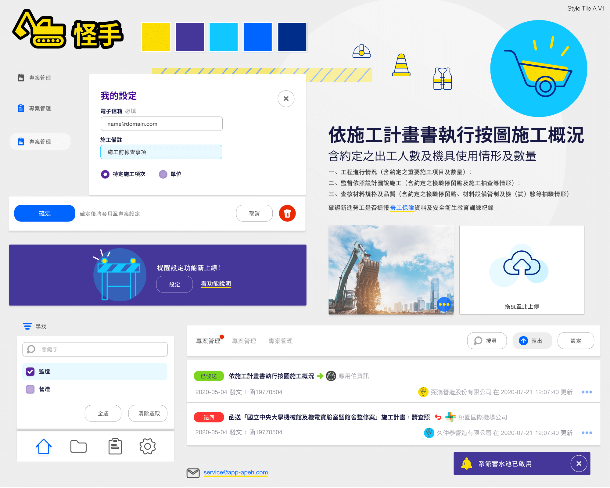
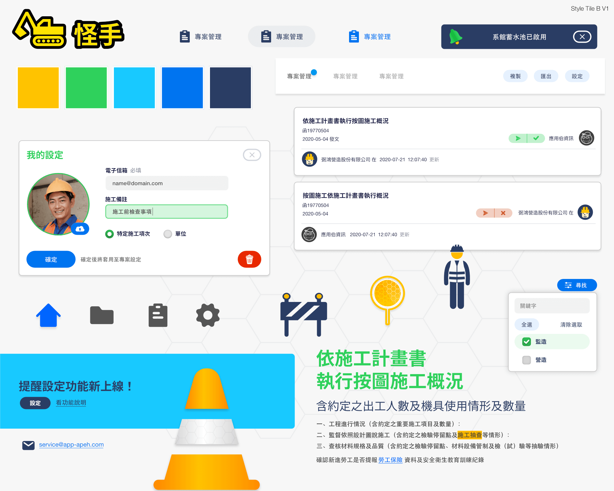

Kuaitshiu 的 UI 設計準備
Kuaitshiu 是「怪手」的台語發音，這是前公司主要產品，為土木營建業設計的資訊管理 web app。

Atomic Design
Kuaitshiu 準備要開始規劃時，我剛好讀完 Atomic Design。作者 Brad Frost 連「設計師提議要做 design system 一定會被拒絕」的心路歷程都分享了，所以決定要把握這個從零開始規劃軟體的機會嘗試 Frost 推廣的設計方法，這篇介紹我這次做的 20 second gut test 跟 style tile 的心得。
20 second gut test
這是我第一次引導 20 second gut test，受訪者是前老闆蔡哥跟前同事 Viki。
測試方法是讓受訪者看大約 10 組左右的介面，1 組看 20 秒；看介面的過程不討論，受訪者要對每個介面打 0 到 5 分，越喜歡就越高分。
因為不是開放性問題，我覺得受訪者壓力不會太大，能輕鬆地讓受訪者對設計有參與感。
訪問者可以觀察受訪者的喜好跟期待，能夠減少彼此對提案方向未知的焦慮。
在這之前我幾乎沒有參與過任何設計前置準備。
準備測試素材
我覺得 Kuaitshiu 的介面挑戰在於要可以呈現大量漢字文字資訊的響應式網頁，使用者上班時才會使用的、不是娛樂性的、使用者具有專門領域知識等等，依據主觀觀察來挑選測試風格用的參考對象。
其中也刻意放幾個我覺得不適合的，而且這個測試的結果真的讓我很意外，受訪者選了我完全沒料到他們會喜歡的風格！
測試的介面有：
- 財報狗
- Behance
- Dropbox
- GitHub
- Atlansian
- Droplr
- stack overflow
- YOCTAL AI
- Toggl
每個網站各擷取 2 至 4 張螢幕截圖，呈現視覺風格跟帶到一點點功能即可。
不過截圖需要簡單的加工，把 Logo 改成 Kuaitshiu 的，以及顯眼的文案改成符合土木營建業領域的用詞，讓視覺設計領域外的受訪者可以更「入戲」。
很驚喜很意外的是 …
我原本的主觀認為 Dropbox 的行銷素材跟 GitHub 的功能介面會適合 Kuaitshiu。
如果沒有做 20s gut test，我會朝向有商務感、無裝飾、可以裝下很多文字資訊的介面來設計。
但根據測試結果我觀察到的是完全不同方向，受訪者喜歡的是 Toggl：色彩活潑、趣味感且可愛的，介面上文字較少的。
我真的很驚訝得到最高分的是可愛風格的介面 😂
測試過程中觀察到的一切還是得由設計師解讀並做最後的設計決定，不過我覺得這是讓團隊參與設計的好方法，在還沒有投入時間設計可以先探測團隊期待什麼視覺風格，可降低團隊中非設計領域參與者的不安。
Style tile
接著根據 20 second gut test 選出來的視覺方向，設計兩款 Style tile。
 Style tile 是用來溝通視覺風格，還不是 UI，所以是刻意的設計得更像 mood board，是用來讓人「感受」視覺風格用的，清楚的表達 Style tile 還不是呈現功能的介面是很重要的。